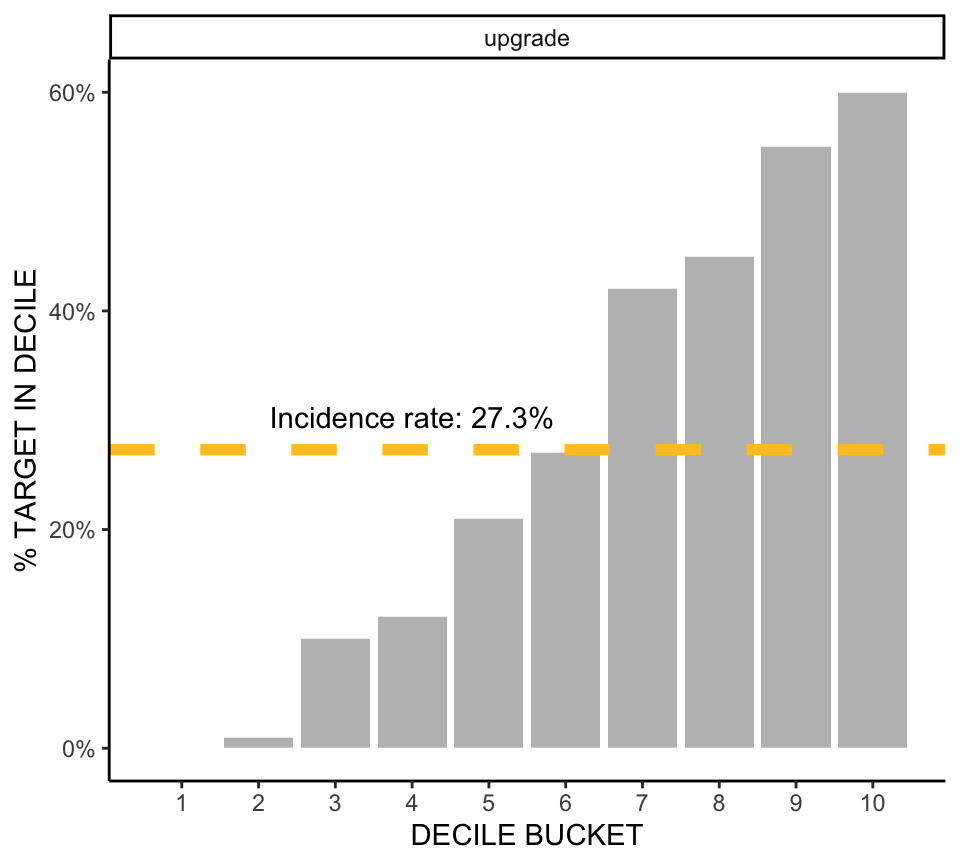
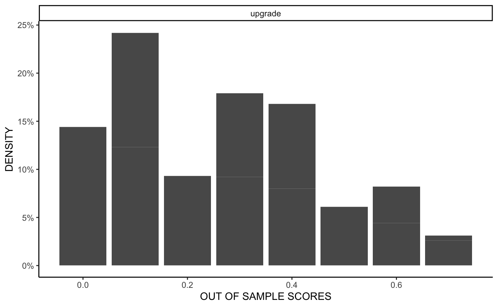

There are so many models to build! When this becomes challenging on a local machine, offloading model building to the cloud can save a lot of time and effort.
CivisML is a machine learning service on Civis Platform that makes this as painless as possible. You can fit many different models, do extensive hyperparameter tuning, and score data sets with millions of observations stored in remote databases. Once these models are built, they live in Civis Platform permanently and can be included into production pipelines. Results can be easily incorporated into reports and dashboards.
CivisML is built in Python using scikit-learn, and leverages AWS behind the scenes for efficient distributed computing. However, most of its features can be used through R without knowledge of Python or AWS with the civis_ml function in civis.
While civis_ml is a complex function with many arguments, basic machine learning modeling and scoring can be easily carried out. We illustrate several features of civis_ml with data from a fictitious company called Brandable, who is looking to predict which customers are likely to upgrade from the free to the premium service.
The first step of modeling with civis_ml is to specify the data source, which is the first argument. civis_ml works with local data frames, a CSV on local disk, feather-format files, tables in Redshift, and files on S3 (the files endpoint):
library(civis)
civis_ml(df, ...)
civis_ml("path/to/data.csv", ...)
civis_ml(civis_table(table_name = "schema.table", database_name = "database"), ...)
civis_ml(civis_file(1234), ...)The Brandable data is located in a Redshift table called sample_project.premium_training_set.
options(civis.default_db = "my_database")
tab <- civis_table(table_name = "sample_project.premium_training_set")Note that civis_table only returns information on where to find the data for civis_ml, not the data itself. civis_table also takes two SQL statements that can be useful for limiting the rows used for training: sql_where, and sql_limit.
After the data source is specified, we next choose the model type. There are 13 named CivisML models that can be called from civis_ml, 6 for classification and 7 for regression. The name of the model corresponds to the name of the estimator in scikit-learn. It can be given in the model_type argument of civis_ml, or called directly using a civis_ml_* function such as civis_ml_sparse_logistic.
| Name | R Workflow | Model Type | scikit-learn Documentation | |
|---|---|---|---|---|
sparse_logistic |
civis_ml_sparse_logistic |
classification | Logistic Regression | |
gradient_boosting_classifier |
civis_ml_gradient_boosting_classifier |
classification | GradientBoostingClassifier | |
random_forest_classifier |
civis_ml_random_forest_classifier |
classification | RandomForestClassifier | |
extra_trees_classifier |
civis_ml_extra_trees_classifier |
classification | ExtraTreesClassifier | |
multilayer_perceptron_classifier |
classification | MLPClassifier | ||
stacking_classifier |
classification | StackedClassifier | ||
sparse_linear_regressor |
civis_ml_sparse_linear_regressor |
regression | LinearRegression | |
sparse_ridge_regressor |
civis_ml_sparse_ridge_regressor |
regression | Ridge | |
gradient_boosting_regressor |
civis_ml_gradient_boosting_regressor |
regression | GradientBoostingRegressor | |
random_forest_regressor |
civis_ml_random_forest_regressor |
regression | RandomForestRegressor | |
extra_trees_regressor |
civis_ml_extra_trees_regressor |
regression | ExtraTreesRegressor | |
multilayer_perceptron_regressor |
regression | MLPRegressor | ||
stacking_regressor |
regression | StackedRegressor |
Documentation on the meta parameters specific to each estimator are provided in ?civis_ml_*. For example, the regularization strength parameter C of sparse_logistic is documented in ?civis_ml_sparse_logistic.
For the Brandable data, we use a random_forest classifier to predict the probability that a customer upgrades from free to premium services. For efficiency, we can also denote a primary_key, and a set of excluded_columns that are not included in the model:
library(civis)
tab <- civis_table("sample_project.premium_training_set")
m <- civis_ml(tab, dependent_variable = "upgrade",
model_type = "random_forest_classifier",
primary_key = "brandable_user_id",
excluded_columns = "residential_zip")
m <- civis_ml_random_forest_classifier(tab,
primary_key = "brandable_user_id",
excluded_columns = "residential_zip")Note that if the dependent variables have null values, those rows will be removed before modeling.
You can tune hyperparameters using one of two methods: grid search or hyperband. CivisML will perform grid search if you pass a named list of hyperparameters and candidate values to cross_validation_parameters. By default, hyperparameter tuning will run in parallel, using as many jobs as possible without overloading your computing cluster. If you wish to have more control over the number of jobs running at once, you can set it using the n_jobs parameter.
Hyperband is an efficient approach to hyperparameter optimization, and recommended over grid search where possible. CivisML will perform hyperband optimization if you pass the string "hyperband" to cross_validation_parameters. Hyperband cannot be used to tune GLMs. For this reason, preset GLMs do not have a hyperband option. Hyperband is supported for random forests, gradient boosted trees, extra trees, multilayer perceptrons, and the random forest and gradient boosted tree steps of stacking. It is highly recommended that multilayer perceptron models only be used with hyperband.
For the random_forest_classifier in the Brandable data, we try both "hyperband" and grid search for hyperparameter optimization.
tab <- civis_table("sample_project.premium_training_set")
# hyperband
m_hyper <- civis_ml(tab, dependent_variable = "upgrade",
model_type = "random_forest_classifier",
primary_key = "brandable_user_id",
excluded_columns = "residential_zip",
cross_validation_parameters = 'hyperband')
# grid search
cv_params <- list("max_depth" = c(2, 3, 5),
"n_estimators" = c(50, 100, 500))
m_grid <- civis_ml(tab, dependent_variable = "upgrade",
model_type = "random_forest_classifier",
primary_key = "brandable_user_id",
excluded_columns = "residential_zip",
cross_validation_parameters = cv_params)CivisML runs pre-defined models with hyperband using the following distributions:
| Models | Cost Parameter | Hyperband Distributions |
|---|---|---|
| gradient_boosting_classifier gradient_boosting_regressor GBT step in stacking_classifier GBT step in stacking_regressor |
n_estimators min = 100, max = 1000
|
max_depth: randint(low=1, high=5) max_features: [None, 'sqrt', 'log2', 0.5, 0.3, 0.1, 0.05, 0.01] learning_rate: truncexpon(b=5, loc=.0003, scale=1./167.)
|
| ———————————- | —————— | ————————————————————————— |
| random_forest_classifier random_forest_regressor extra_trees_classifier extra_trees_regressor RF step in stacking_classifier RF step in stacking_regressor |
n_estimators min = 100, max = 1000
|
criterion: ['gini', 'entropy'] max_features: truncexpon(b=10., loc=.01, scale=1./10.11) max_depth: [1, 2, 3, 4, 6, 10, None]
|
| ———————————- | —————— | ————————————————————————— |
| multilayer_perceptron_classifier multilayer_perceptron_regressor |
n_epochs min = 5, max = 50
|
keep_prob: uniform() ` hidden_units: [(), (16,), (32,), (64,), (64, 64), (64, 64, 64), (128,), (128, 128), (128, 128, 128), (256,), (256, 256), (256, 256, 256), (512, 256, 128, 64), (1024, 512, 256, 128)] learning_rate: [1e-2, 2e-2, 5e-2, 8e-2, 1e-3, 2e-3, 5e-3, 8e-3, 1e-4]
|
The truncated exponential distribution for the gradient boosting classifier and regressor was chosen to skew the distribution toward small values, ranging between .0003 and .03, with a mean close to .006. Similarly, the truncated exponential distribution for the random forest and extra trees models skews toward small values, ranging between .01 and 1, and with a mean close to .1.
The "stacking_classifier" model stacks together the "sparse_logistic", "gradient_boosting_classifier", and "random_forest_classifier" models using defaults documented in ?civis_ml. Each column is first standardized, and then the model predictions are combined using LogisticRegressionCV with penalty='l2' and tol=1e-08. The "stacking_regressor" works similarly, stacking together the "sparse_linear_regressor", "gradient_boosting_regressor", and "random_forest_regressor" models, and combining them using NonNegativeLinearRegression.
m_stack <- civis_ml(tab, dependent_variable = "upgrade",
model_type = "stacking_classifier",
primary_key = "brandable_user_id",
excluded_columns = "residential_zip")A simple summary of the results from the best fitting model is provided with print:
m## <CivisML random_forest_classifier>
## https://platform.civisanalytics.com/#/models/7072485
## Job id: 7072485 Run id: 58251183
##
## AUC: 0.8009
## upgrade:
## 0 1
## Prop Correct 0.923 0.3297Following the link takes you to a summary of the model results in Civis Platform. Additional metrics can be computed with get_metric:
get_metric(m, "accuracy")## [1] 0.761get_metric(m, "confusion_matrix")## [,1] [,2]
## [1,] 671 56
## [2,] 183 90get_metric(m, "roc_auc")## [1] 0.8009004Out of sample (or out of fold) scores used in training can be retrieved using fetch_oos_scores:
oos <- fetch_oos_scores(m)
head(oos)## brandable_user_id upgrade_1
## 1 00214b9181f2347 0.3280
## 2 0b6cbd77cb8d98b 0.7140
## 3 12ca082b063a3bf 0.4480
## 4 130060adea791e8 0.2060
## 5 1495366621d3834 0.3152
## 6 1a8ed19916ae7c2 0.1600For classification problems, plot produces a a decile plot using ggplot2. For the premium upgrade model, the decile plot shows that the top-scoring 10% of individuals contain 2.20 times as many targets (people who upgraded) as a randomly selected list of the same size.
plot(m)
For regression problems, plot produces a binned scatter-plot of \(y\) against \(\hat{y}\).
hist shows the histogram of out of sample (out of fold scores), also using ggplot2:
hist(m)
CivisML can also be used to score models on hundreds of millions of rows, and distributed over many compute instances. Like many estimators in R, this is done through a predict method. The newdata argument of predict can take any data source supported in civis_ml. Here we use a table in Redshift containing all Brandable users, and output the result to another table in Redshift:
pred_tab <- civis_table(table_name = "sample_project.brandable_all_users")
pred_job <- predict(m, newdata = pred_tab,
output_table = "sample_project.brandable_user_scores")Like training and validation, scoring is distributed by default, using up to 90 percent of your computing cluster resources. If you would like to have more control over the number of jobs that are run at once, you can set a maximum using n_jobs:
pred_job <- predict(m, newdata = pred_tab,
output_table = "sample_project.brandable_user_scores",
n_jobs = 25)The predictions can be loaded into memory using fetch_predictions, which downloads directly from S3:
yhat <- fetch_predictions(pred_job)Note that if the table of predictions exceeds available memory, it may be helpful to use download_civis instead.
# download from S3
download_civis(pred_job$model_info$output_file_ids, path = "my_predictions.csv")
# download from Redshift
download_civis("sample_project.brandable_user_scores")An existing model (or particular run of an existing model) can be retrieved using civis_ml_fetch_existing:
model_id <- m$job$id
m <- civis_ml_fetch_existing(model_id)Unfortunately, many kinds of errors can occur. When an error occurs within CivisML, a civis_ml_error is thrown. By default, the log from the CivisML job is printed, which is useful for debugging.
Here is an example error from misspelling the model type:
civis_ml(tab, dependent_variable = "upgrade",
model_type = "random_fest_classifier",
primary_key = "brandable_user_id",
excluded_columns = "residential_zip",
cross_validation_parameters = cv_params)## <civis_ml_error>
## scripts_get_custom_runs(id = 7077157, run_id = 58263925):
## 2017-08-29 13:01:54 PM CDT Queued
## 2017-08-29 13:01:55 PM CDT Running
## 2017-08-29 13:01:57 PM CDT Dedicating resources
## 2017-08-29 13:01:58 PM CDT Downloading code and container
## 2017-08-29 13:01:59 PM CDT Executing script
## 2017-08-29 13:02:03 PM CDT Please select one of the pre-defined models: ['sparse_logistic', 'sparse_linear_regressor', 'sparse_ridge_regressor', 'gradient_boosting_classifier', 'random_forest_classifier', 'extra_trees_classifier', 'gradient_boosting_regressor', 'random_forest_regressor', 'extra_trees_regressor']
## 2017-08-29 13:02:05 PM CDT Process used approximately 97.57 MiB of its 3188 MiB memory limit
## 2017-08-29 13:02:05 PM CDT Failed
## 2017-08-29 13:02:06 PM CDT Error on job: Process ended with an error, exiting: 1.If you don’t understand the error message, providing the error message, job, and run ids to support is the best way to get help!
civis_ml
When programming with civis_ml, errors can be caught using the base R try or tryCatch. In civis, we provide functions for getting debugging information using get_error or just the logs using fetch_logs.
e <- tryCatch({
civis_ml(tab, dependent_variable = "upgrade",
model_type = "random_fest_classifier",
primary_key = "brandable_user_id",
excluded_columns = "residential_zip")
}, civis_ml_error = function(e) e)
get_error(e)
fetch_logs(e)Error handling can be used to implement more robust workflow programming with civis_ml. In the following function, we implement retry_model, which retries on e.g. connection failures but not on a civis_ml_error.
retry_model <- function(max_retries = 5) {
i <- 1
while (i < max_retries) {
tryCatch({
m <- civis_ml(tab, dependent_variable = "upgrade",
model_type = "random_forest_classifier",
primary_key = "brandable_user_id",
excluded_columns = "residential_zip")
return(m)
}, civis_ml_error = function(e) stop(e))
cat("Retry: ", i, fill = TRUE)
i <- i + 1
}
stop("Exceeded maximum retries.")
}Workflow programming could be further enhanced by printing the logs, storing the error object, or writing error logs to a file or database.
To fit many models in parallel using parallel, foreach, or future, check out this article or the vignette on concurrency at browseVignettes("civis").
Many estimators take a sample_weight argument. This can be be specified with the fit_params argument of civis_ml using list(sample_weight = 'survey_weight_column').
Modeling data must be complete. Any missing values will be imputed with the mean of non-null values in a column.
Custom estimators can be written in Python and included in CivisML if they follow the scikit-learn API. For example, the sparse_logistic, sparse_linear_regressor, and sparse_ridge_regressor models all use the public Civis Analytics glmnet wrapper in Python.
Browse the CivisML documentation for more details!